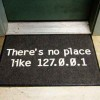

6777 de dolari pe lună, adică 81.327 USD pe an, câştigă în medie un american care lucrează în domeniul IT. Profesioniştii din domeniul tehnologiei informaţiei s-au bucurat de cea mai mare creştere salarială anuală din 2008 până în prezent, conform studiului privind nivelul veniturilor în 2011, realizat de Dice, un site de recrutare dedicat celor din domeniul tehnologiei şi ingineriei.
După doi ani în care câştigurile au rămas aproape neschimbate, programatorii, inginerii de sistem, administratorii de reţea, graficienii şi designerii web au obţinut măriri salariale de peste 2%. În 2010, o slujbă în domeniul IT era remunerată cu un salariu mediu de 6615 dolari americani pe lună (79.380 USD pe an).
Conform raportului citat, în vreme ce retribuţiile în rândul profesioniştilor cu experienţă continuă să crească, slujbele pentru începători sunt mai prost plătite. Au câştigat mai mult doar lucrătorii cu peste 11 ani de vechime în domeniu.
Primele şi bonusurile de performanţă sunt acordate îndeosebi specialiştilor IT care activează în domeniul telecomunicaţiilor, în cel bancar, în companiile de utilităţi şi energie, precum şi angajaţilor din firmele producătoare de software şi hardware.
Merită o slujbă în Silicon Valley?
IT-iştii din Silicon Valley sunt cel mai bine plătiţi, ei încasând aproximativ 8683 de dolari pe lună. Mai exact, 104.195 USD pe an. Tot aici se acordă cele mai însemnate bonusuri, 38% dintre angajaţi având prime care depăşesc 10.000 de dolari într-un an.
În 12 dintre primele 20 de oraşe americane în care sectorul tehnologiei informaţiei e bine reprezentat s-au înregistrat creşteri salariale peste medie. Cele mai mari: Austin, Texas, cu o creştere de 13% a venitului mediu, până la 89.419 dolari; Portland, Oregon, cu o creştere de 12%, până la 82.055 de dolari; Houston, cu o creştere de 7%, până la 89.307 dolari şi Washington D.C. cu aproape 6% creştere, până la 94.317 dolari venit mediu anual pentru job-urile din IT.
Studiul a fost realizat online, în rândul unui eşantion reprezentativ de profesionişti din domeniul IT, care au răspuns întrebărilor din chestionar în perioada 19 septembrie – 21 noiembrie 2011.

{kind=link}
Comments on this entry are closed.